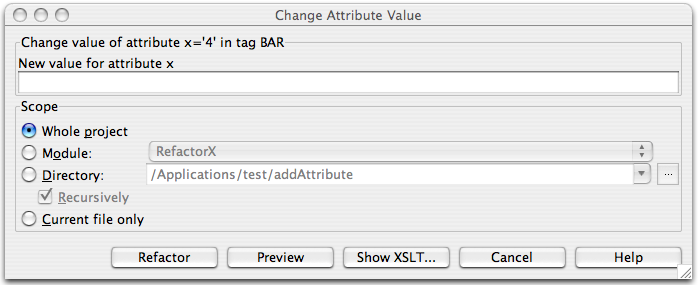

| Change Attribute Value Refactoring |
|
|
The Change Attribute Value refactoring allows you to change the values an
attribute
defined on a set of XML tags. If this refactoring is invoked, all attributes matching
the selected attribute name and selected attribute value on tags with the selected tag name may have their values
changed.
This bulk modification of attribute values may be useful as XML schemas evolve.
To change an attribute value, position the caret on the attribute to modify in the editor, right-click, and select the XML Refactorings| Change Attribute Value... menu item. The following dialog will appear:  1. Determine the new value for the attribute. 2. Determine the scope of the change. All attributes matching the name and value of the attribute selected on the tag selected will be modified, if they are in the selected scope. Scopes available include the current file, the entire project, or a specified directory or module. Directory scopes can either include sub-directories, or not, based on whether the Recursively checkbox is selected. If the "Limit to files with DTD:..." checkbox is selected, the scope will be limited to those files with the same DOCTYPE as the current file. 3. Press Preview button to make IDEA to search for usages of the selected attribute Find window. 4. Click OK to continue. If you do not select the Preview option, all usages will be changed immediately. Pressing Preview opens the Refactoring preview window displaying all found usages of the attributes to be changed. In this window you can exclude/include usages you want to refactor. Pressing Show XSLT... opens the XSLT preview window displaying an small fragment of XSLT equivalent to the refactoring requested. This fragment can be used by XSLT processors to perform the requested refactoring on files external to your IDEA project. |
| The Refactoring preview window may appear anyway, if the files to be affected are read-only. |